1016E10 SINGLE CYLINDER HEAD, removed - Overhaul
- Path
- Procedures > 10 ENGINE > 1016 CYLINDER HEAD(S) > 1016E CYLINDER HEAD/S - VARIOUS OPERATIONS > 1016E10 SINGLE CYLINDER HEAD, removed - Overhaul
- Kind
- repair procedure (removal / refitting; the operation number is the code)
- Applies to
- engines: 2.4 JTD 10V; all production periods
- Interactive page
- https://sloeber94.github.io/elrnDB-lThss/en/#/75545
Applies to: engines: 2.4 JTD 10V; all production periods
 Removing
Removing
 Refitting
Refitting1. Undo the bolts (1a) and remove the water pump rigid inlet pipe (1b).
2. Remove the seal.
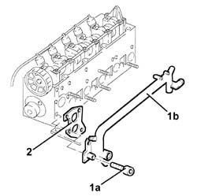
Applies to: engines: 2.4 JTD 10V; all production periods
- Place the head on the workbench.
1. Undo the stud using the nut and locknut.
2. Fit the tool (2a) on the cylinder head (2b) and secure it using the nuts (2c).
 | Description | Code | Function |
|---|---|---|---|
2a | Support | 1.860.460.000 | Fitting cylinder head support |
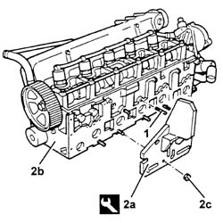
Applies to: engines: 2.4 JTD 10V; all production periods
1. Loosen the manifold side connectors for the pipes from the fuel manifold to the injectors.
2. Undo the injector side connectors for the pipes from the fuel manifold to the injectors.
3. Undo the nuts (3a) and remove the fuel distribution manifold (3b) complete with fuel pressure sensor and pipes (3c).
- Completely undo the connectors loosened previously and separate the pipes from the fuel manifold ot the injectors from the fuel manifold.
4. Disconnect the pipe from the injectors to the fuel recovery manifold, fuel recovery manifold side.
- Undo the nuts and disconnect the supply wiring from the heater plugs.
5. Undo the nuts (5a) and remove the air intake manifold assembly (5b).
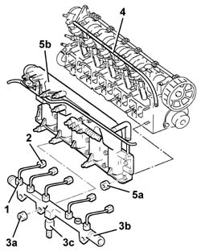
Applies to: engines: 2.4 JTD 10V; all production periods
1. Undo the bolts (1a) and remove the vacuum unit (1b) complete with O-ring.
2. Undo the bolts (2a) and remove the thermostat (2b) complete with pipe and sensors.
3. Remove the seal.

Applies to: engines: 2.4 JTD 10V; all production periods
1. Undo the driven toothed pulley bolt (1a) using the tools (1b).
| Description | Code | Function |
|---|---|---|---|
1b | Support for counter-torque | 1.860.831.000 | Removing toothed pulley bolt |
| Description | Code | Function |
|---|---|---|---|
1b | Counter-torque | 1.860.831.001 | Counter-torque |
2. Remove the toothed driven pulley.
3. Undo the bolts (3a) and remove the cam angle sensor (3b).
 | Description | Connector |
|---|---|---|
3b | Supercharging sensor | K082 |
4. Undo the bolts (4a) and remove the water pump (4b) complete with O-ring (4c).
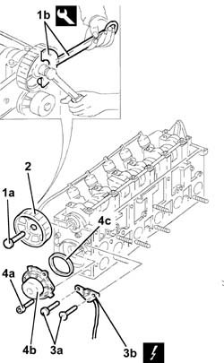
Applies to: engines: 2.4 JTD 10V; all production periods
1. Unscrew the glow plugs and remove.
2. Manually push the clips (2a) and disconnect the pipe from the injectors to the fuel recovery manifold (2b), injector side, and remove it.
3. Undo the nuts for the brackets fastening the injectors and the washers.
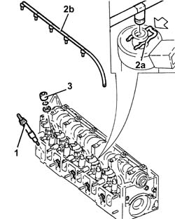
Applies to: engines: 2.4 JTD 10V; all production periods
1. Remove the injectors (1a), complete with gaskets and mounting brackets (1b), using the tool (1c).
| Description | Code | Function |
|---|---|---|---|
1c | Extractor | 1.870.739.000 | Removing injectors |
- Remove the injector bracket support pads.
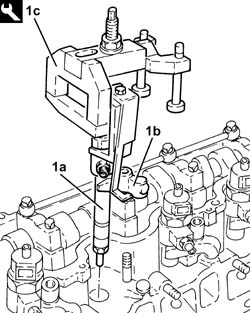
Applies to: engines: 2.4 JTD 10V; all production periods
- Check that the camshaft endfloat is within the recommended values using a dial gauge.
 | Subject | Value |
|---|---|---|
. | INTAKE AND EXHAUST CAMSHAFT | mm |
- | End float | 0.100 - 0.230 |
- If the camshaft endfloat is not within the recommended values, replace the worn components when reassembling the cylinder head.
1. Undo the camshaft cap bolts.
2. Remove the camshaft support lubrication pipe.
3. Remove the camshaft caps.
4. Remove the camshaft.
5. Remove the camshaft front oil seal.
6. Remove the cups complete with valve clearance adjustment pads.
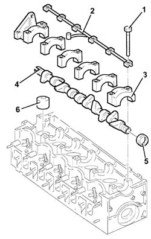
Applies to: engines: 2.4 JTD 10V; all production periods
- Remove the cylinder head from the vice.
- Place a suitable wooden bench between the support tools and the cylinder head to support the valves.
- Refit the cylinder head in the vice.
1. Remove the cotters (1a) using the tool (1b).
| Description | Code | Function |
|---|---|---|---|
1b | Support | 1.860.644.000 | Removing cotters |
2. Remove the valve upper shim.
3. Remove the valve spring.
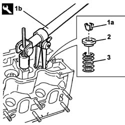
Applies to: engines: 2.4 JTD 10V; all production periods
1. Remove the valve guide oil seal (1a) using the tool (1b).
| Description | Code | Function |
|---|---|---|---|
1b | Extractor | 1.860.989.000 | Removing valve guide oil seal |
2. Remove the lower shim.
- Carry out the same operations on the other valves.
- Remove the cylinder head from the support tools and keep the valves.
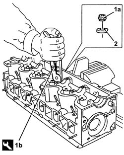
Applies to: engines: 2.4 JTD 10V; all production periods
- Position the cylinder head on a special workbench.
1. Thread the special extraction tool (1b) in the valve seat (1a).
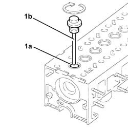
Applies to: engines: 2.4 JTD 10V; all production periods
- Turn the cylinder head upsidedown on the workbench.
1. Remove the valve seat (1a) using the extraction tool (1b).
- Carry out the same operations on the other valve seats.
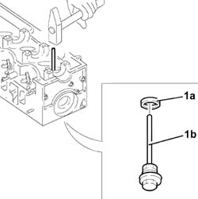
Applies to: engines: 2.4 JTD 10V; all production periods
See in Op. 1016E14 Valve guides for single cylinder head - Replace during Op. 1016E10
- For the replacement of the valve guides
Applies to: engines: 2.4 JTD 10V; all production periods
Refitting
Removing- Clean any residues of the old gasket from the lower cylinder head plane.
- Check that the planarity of the lower cylinder head plane corresponds to the recommended values.
| Subject | Value |
|---|---|---|
. | Cylinder head | mm |
- | Lower plane planarity | 0.1 |
1. If the planarity of the lower cylinder head plane does not correspond to the recommended figures, regrind it without exceeding the minimum permitted height.
| Subject | Value |
|---|---|---|
1 | Cylinder head | mm |
- | Minimum permitted height | 140.85 ÷ 141.15 |
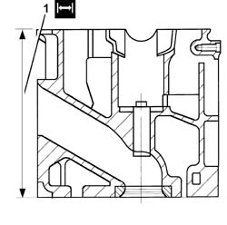
Applies to: engines: 2.4 JTD 10V; all production periods
- Check that the valves do not show signs of grooves or seizing.
- Check that the diameter of the valve stems corresponds to the recommended figures; if not, replace the worn valves.
| Subject | Value |
|---|---|---|
. | Valves | mm |
- | Stem diameter | 7.890 - 7.940 |
- With the valve guide fitted in the head, check that the diameter corresponds to the recommended values.
| Subject | Value |
|---|---|---|
. | Cylinder head valve guides (all) | mm |
- | valve guide diameter | 8.040 - 8.022 |
- Check that the outer diameter of the cups corresponds to the recommended figures; if not, replace the worn components.
| Subject | Value |
|---|---|---|
. | Valve rocker arms | mm |
- | Outer diameter | 36.975 ÷ 36.991 |
- Check that the diameter of the cup seats corresponds to the recommended figures; if not, replace the cylinder head.
| Subject | Value | |
|---|---|---|---|
. | Cylinder head | mm | |
- | - | 37.000 ÷ 37.025 |
- Check that the length of the valve springs released is within the recommended values.
| Subject | Value |
|---|---|---|
. | Valve springs | mm |
- | Free length | 53.9 |
- Using a torque wrench, check that the spring specifications correspond to the recommended figures; if not, replace the worn components.
| Subject | Value |
|---|---|---|
. | Valve springs | mm |
- | Length | 24.5 ÷ 21.5 |
| Subject | Value |
|---|---|---|
. | Valve springs | mm |
- | Length | 48.6 ÷ 43.6 |
- Check that the diameter of the camshaft bearings corresponds to the recommended figures; if not, replace the worn camshaft.
| Subject | Value |
|---|---|---|
. | Camshaft | mm |
- | Journal diameter | 26.000 ÷ 26.015 |
- Check that the nominal camshaft cam lift corresponds to the recommended figures; if not, replace the worn camshaft.
| Subject | Value |
|---|---|---|
. | Camshaft | mm |
- | Nominal exhaust cam lift | 9.0 |
| Subject | Value |
|---|---|---|
. | Camshaft | mm |
- | Nominal inlet cam lift | 8.5 |
1. Fit the camshaft caps (1a) on the cylinder head and tighten the bolts (1b) to the recommended torque.
 | Value - daNm | Fastening | Component | Ø |
|---|---|---|---|---|
1b | (cylinder head side) 1.4 - 2.0 | Bolt | CAMSHAFT CAPS | M7 |
2. Check that the diameter of the camshaft supports corresponds to the recommended figures; if not, replace the cylinder head.
| Subject | Value |
|---|---|---|
2 | Camshaft supports | mm |
- | Diameter | 26.045 - 26.070 |
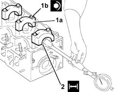
Applies to: engines: 2.4 JTD 10V; all production periods
- Check that the outer diameter of the valve seats to be fitted corresponds to the recommended figures.
| Subject | Value | |
|---|---|---|---|
. | Valve seats | mm | |
- | - | Outer diameter | |
- | Inlet | 36.135 - 36.150 | |
- | Exhaust | 35.142 - 35.157 |
1. Fit the valve seats (1a) using a suitable tool (1b).
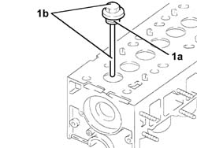
Applies to: engines: 2.4 JTD 10V; all production periods
1. Grind the valve seats to the recommended size.
| Subject | Value |
|---|---|---|
1 | Valve seats | |
- | Contact band angle with valve | 45° 30' ±1° |
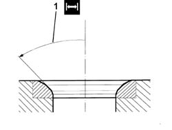
Applies to: engines: 2.4 JTD 10V; all production periods
- Grind the valve seats using a suitable tool.
- Temporarily fit the valves.
1. Check that the valve recess in relation to the cylinder head plane corresponds to the recommended figures using the tool fitted with a dial gauge.
| Subject | Value |
|---|---|---|
1 | Valves | mm |
- | Cylinder head plane recess | 0.1 - 0.5 |
| Description | Code | Function |
|---|---|---|---|
1 | Dial gauge support | 1.870.404.000 | Checking valve recess |
- If the valve recess in relation to the cylinder head plane does not correspond to the recommended figures, regrind the valve seats once again.
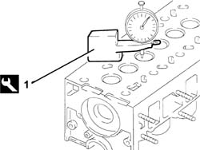
Applies to: engines: 2.4 JTD 10V; all production periods
- Place a suitable wooden bench between the support tools and the cylinder head to support the valves.
- Fit the cylinder head, complete with valves, on the support tools and secure it using the nuts.
- Fit the lower shim.
1. Fit the valve guide oil seals (1a) using the tools (1b) and (1c).
| Description | Code | Function |
|---|---|---|---|
1b | Drift | 1.860.814.001 | Valve guide oil seal fitting |
| Description | Code | Function |
|---|---|---|---|
1c | Fitting tools | 1.860.313.000 | Fitting oil seal |
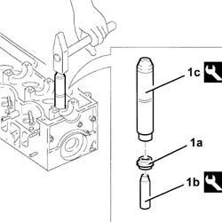
Applies to: engines: 2.4 JTD 10V; all production periods
- Fit the valve spring.
- Fit the valve upper shim.
1. Fit the cotters (1a) using the tool (1b).
| Description | Code | Function |
|---|---|---|---|
1b | Support | 1.864.644.000 | Fitting cotters |
- Carry out the same operations on the other valves.
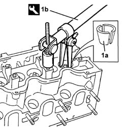
Applies to: engines: 2.4 JTD 10V; all production periods
- Remove the cylinder head from the support tools.
- Remove the wooden valve support bench from the support tools.
- Refit the cylinder head on the support tools.
- Fit the cups complete with valve clearance adjustment pads.
- Fit the camshaft.
1. Fit the camshaft caps.
- Fit the camshaft bearing lubrication pipe.
2. Tighten the camshaft cap bolts to the recommended torque.
| Value - daNm | Fastening | Component | Ø |
|---|---|---|---|---|
2 | (cylinder head side) 1.4 - 2.0 | Bolt | CAMSHAFT CAPS | M7 |
| Value - daNm | Fastening | Component | Ø |
|---|---|---|---|---|
2 | (camshaft side) 0.9 -2.0 | Bolt | CAMSHAFT CAPS | - |
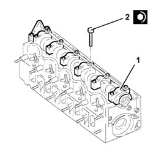
Applies to: engines: 2.4 JTD 10V; all production periods
1. Fit the camshaft front oil seal (1a) using the tool (1b).
| Description | Code | Function |
|---|---|---|---|
1b | Fitting tool | 1.860.824.000 | Fitting oil seal |
2. Fit the spark plugs and tighten them to the recommended torque.
| Value - daNm | Fastening | Component | Ø |
|---|---|---|---|---|
2 | 1.4 -1.8 (cylinder head side) | - | HEATER PLUGS PREHEATING | M12 |
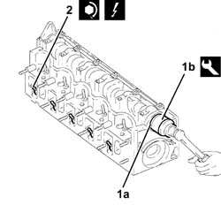
Applies to: engines: 2.4 JTD 10V; all production periods
1. Fit the injector bracket support pads.
2. Fit the injectors (2a) complete with gaskets (2b).
3. Fit the injector brackets (3a) and tighten the nuts (3b) to the recommended torque.
| Value - daNm | Fastening | Component | Ø |
|---|---|---|---|---|
3b | 2.7 -4.0 (cylinder head side) | Nut | INJECTORS(Petrol) | M8 |
4. Position the connectors for the pipe from the injectors to the fuel recovery manifold (4a) in the corresponding injector seats and insert them fully until the clip (4b) can be heard to click.
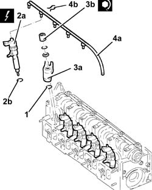
Applies to: engines: 2.4 JTD 10V; all production periods
1. Fit the water pump (1a), complete with a new O-Ring (1b) and tighten the bolts (1c) to the recommended torque.
| Value - daNm | Fastening | Component | Ø |
|---|---|---|---|---|
1c | 2.3 - 3.3 | Bolt | WATER PUMP | M8 |
2. Fit the cam angle sensor (2a) and tighten the bolts (2b).
3. Fit the toothed driven pulley.
4. Tighten the toothed driven pulley bolt (4a) to the recommended torque using the tools (4b).
| Value - daNm | Fastening | Component | Ø |
|---|---|---|---|---|
2b | 0.9 ÷ 1.2 | Bolt | CAM ANGLE SENSOR | - |
| Value - daNm | Fastening | Component | Ø |
|---|---|---|---|---|
4a | 11.0 ÷ 15.9 | Bolt | TOOTHED DRIVEN PULLEY | M12 |
| Description | Code | Function |
|---|---|---|---|
4b | Support for counter-torque | 1.860.831.000 | Tightening with counter-torque |
| Description | Code | Function |
|---|---|---|---|
4b | Counter-torque | 1.860.831.001 | Tightening with counter-torque |
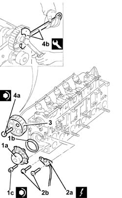
Applies to: engines: 2.4 JTD 10V; all production periods
- Check that the valve clearance, with the valves closed, corresponds to the recommended figures; if not, replace the valve clearance adjustment pads following the instructions given below.
| Subject | Value | |
|---|---|---|---|
. | Valves | mm | |
- | - | Inlet valve clearance in closed position | |
- | Inlet | 0.30 ÷ 0.40 | |
- | Exhaust | 0.30 ÷ 0.40 |
1. Lower the tappet in question using the tool.
| Description | Code | Function |
|---|---|---|---|
1 | Lever | 1.860.443.000 | Lower tappet |
2. Fit the tool.
| Description | Code | Function |
|---|---|---|---|
2 | Lever | 1.860.724.001 | Keeping tappet lowered |
- Remove the tool.
| Description | Code | Function |
|---|---|---|---|
. | Lever | 1.860.443.000 | Lower tappet |
- Extract the valve clearanance adjustment plate and replace it with a one of a suitable thickness.
- Decreasing the size of the plate, increases the clearance whilst increasing it decreases the clearance.
- Remove the tool.
| Description | Code | Function |
|---|---|---|---|
. | Lever | 1.860.724.001 | Keeping tappet lowered |
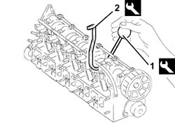
Applies to: engines: 2.4 JTD 10V; all production periods
1. Remove the seal.
2. Fit the thermostat (2a) complete with pipes and sensors and tighten the bolts (2b) to the recommended torque.
| Value - daNm | Fastening | Component | Ø |
|---|---|---|---|---|
2b | 1.4 - 2.0 | Bolt | THERMOSTAT | M8 |
3. Fit the thermostat (3a) complete with O-Ring and tighten the bolts (3b) to the recommended torque.
| Value - daNm | Fastening | Component | Ø |
|---|---|---|---|---|
3b | 2.3 ÷ 3.3 | Bolt | VACUUM UNIT | M6 |
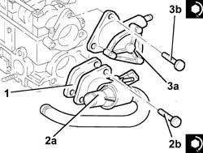
Applies to: engines: 2.4 JTD 10V; all production periods
1. Remove the seal.
2. Fit the water pump rigid inlet pipe (2a) and tighten the bolts (2b).
| Value - daNm | Fastening | Component | Ø |
|---|---|---|---|---|
2b | 0.9 - 1.2 | Bolt | COOLANT PUMP RIGID INLET PIPE | M6 |
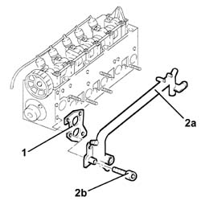
Applies to: engines: 2.4 JTD 10V; all production periods
1. Fit the intake air manifold assembly (1a) and tighten the nuts (1b).
| Value - daNm | Fastening | Component | Ø |
|---|---|---|---|---|
1b | 2.3 - 3.3 | Nut | INLET MANIFOLD |
- Position the heater plugs supply wiring and secure it using the nuts.
| Value - daNm | Fastening | Component | Ø |
|---|---|---|---|---|
. | 0.2 - 0.4 | Nuts | CONNECTOR FOR GLOW PLUGS |
2. Connect the fuel return pipe for lubricating the injectors to the fuel manifold.
- Assemble new pipes from the fuel manifold to the injectors on the fuel manifold without tightening the connectors.
3. Fit the fuel distribution manifold (3a) complete with pipes and fuel pressure sensor and tighten the nuts (3b).
4. Tighten the injector side connectors to the recommended torque.
| Value - daNm | Fastening | Component | Ø |
|---|---|---|---|---|
4 | 2.2 (injector side) | Connector | PIPES FROM FUEL MANIFOLD TO INJECTORS | M12 |
5. Tighten the connectors for the pipes from the fuel manifold to the manifold side injectors to the recommended torque.
| Value - daNm | Fastening | Component | Ø |
|---|---|---|---|---|
5 | 2.2 (manifold side) | Connector | PIPES FROM FUEL MANIFOLD TO INJECTORS | M14 |
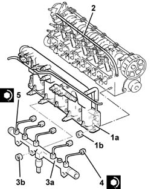
Applies to: engines: 2.4 JTD 10V; all production periods
- Remove the cylinder head from the support tools.
- Remove the cylinder head support tools from the vice and put them down.